单元噪波连接到置换
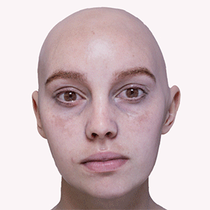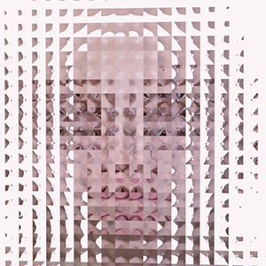
cell_noise 着色器的振幅已设置关键帧
Cell_noise 着色器用途广泛，可用于重现各种不同的着色效果。在本简短教程中，我们将介绍多种可行用途来生成一个“拼贴”风格的抽象图形效果。我们将 cell_noise 着色器连接到摄影机前方透明对象的“置换”(Displacement)属性，以扭曲其后方的主体（在本例中为头部）。我们将使用 cell_noise 着色器的各种属性来重现下面的一些示例图像（所有示例图像均可设置动画）。
要下载 Emily 数字模型，请单击此处。
要下载简单的场景文件，请单击此处。
| 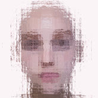 | 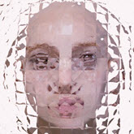 | 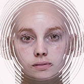 | 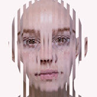 | 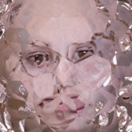 |
| 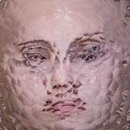 | 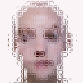 | 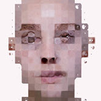 | 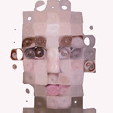 | 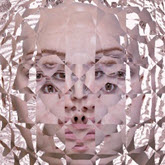 |
- 首先，创建一个平面（可随意使用其他形状），然后将其放置在摄影机与主体（在本例中为头部模型）之间。
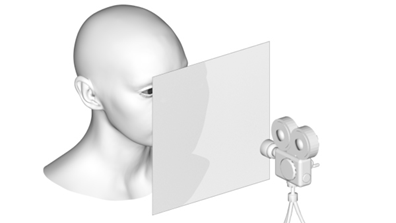
- 创建 skydome_light*。确保 *skydome_light 的“摄影机可见性”(Camera Visibility)默认值为 1，以便可以产生一些折射，而非一片漆黑。
- 为平面指定一个 standard_surface 着色器。我们希望使其看起来像玻璃，但没有任何镜面反射着色。更改以下属性：
base_weight：0
specular_weight：0
transmission_weight：1
- 创建 cell_noise 着色器，并使用它来置换平面。总体效果取决于使用的置换量。从较小值开始，然后逐渐增加。
镜面反射 IOR
尝试更改 standard_surface 着色器的 specular_IOR 值以查看其效果（请记住，也可以使用小于 1 的值）。
| 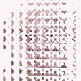 | 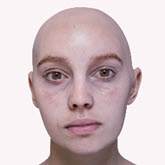 | 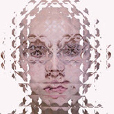 |
| 0.5 | 1 | 1.5 |
单元噪波
图案
下面是使用 cell_noise 着色器的各种噪波图案获得的渲染效果。
| 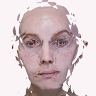 | 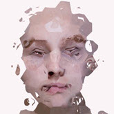 | 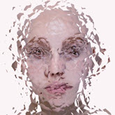 |
| Noise1（默认值） | Worley1 | Alligator |
随机度(Randomness)
更改“随机度”(Randomness)值可能会对结果产生巨大影响。
| 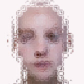 | 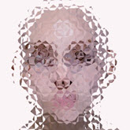 | 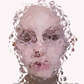 |
| 0 | 0.5 | 1 |
更多示例
掌握了此效果后，可以尝试将其应用于不同的场景以查看能够实现的效果。此外，您也可以尝试添加其他着色器以改变 cell_noise 着色器的效果，如工具、渐变和 color_correct。下面是另外一些使用这些技术的示例。
| 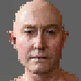 | 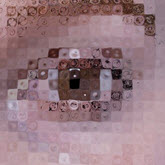 |  |
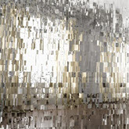 | 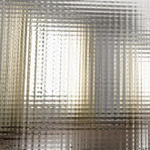 | 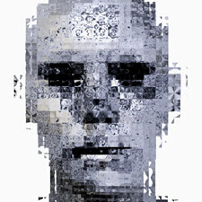 | 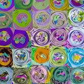 | 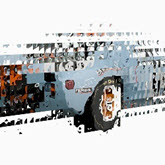 |